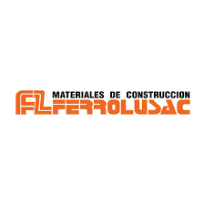

<ion-content>
  <ion-toolbar color="success" class="ion-text-center">
    <ion-label>Guias en proceso</ion-label>
    <ion-buttons slot="start">
     <ion-menu-button ></ion-menu-button>
    </ion-buttons>
  </ion-toolbar>
  <ion-card>
    <ion-card-header>
      <ion-card-title class="ion-text-center">Notas de trabajo</ion-card-title>
      <ion-card-subtitle class="ion-text-center">Martes</ion-card-subtitle>
    </ion-card-header>
    <ion-card-content>
      <ion-list>
        <ion-item>
          <ion-thumbnail slot="start">
            
          </ion-thumbnail>
          <ion-label>Aridos</ion-label>
        </ion-item>
  
        <ion-item>
          <ion-thumbnail slot="start">
            
          </ion-thumbnail>
          <ion-label>New Concisa</ion-label>
        </ion-item>
  
        <ion-item>
          <ion-thumbnail slot="start">
            
          </ion-thumbnail>
          <ion-label>Ferrolusac</ion-label>
        </ion-item>
  
        <ion-item lines="none">
          <ion-thumbnail slot="start">
            
          </ion-thumbnail>
          <ion-label>Quimica del Sur</ion-label>
        </ion-item>
      </ion-list>
    </ion-card-content>
  </ion-card>

</ion-content>
